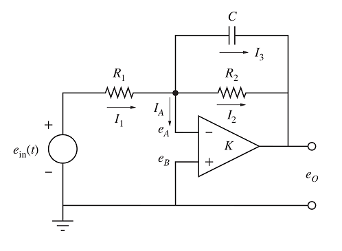

Operational Amplifier
System type: Linear continuous system
State dimension: 2
Application domain: Electrical engineering
Operational amplifiers ("op-amp") are electronic devices to amplify an input voltage signal. They are widely used to construct filters that remove a desired range of frequencies from the input signal.
The schematic diagram of an op-amp has two terminals:
- input terminal (left)
- output terminal (right)
The output voltage is $e_{out} = K(e_B - e_A)$, where $K$ is the voltage gain of the op-amp, which is usually very large (at the order of $10^5 V / V$).
In the ideal op-amp scenario, the following assumptions hold:
- The input terminals of the op-amp draw negligible current.
- The voltage difference at the input terminals $e_B - e_A$ is zero.
- The gain $K$ is infinite.
Inverting amplifier
Consider the following circuit, which consists of an ideal op-amp in the so-called inverting configuration.

It is not hard to show [Klu20] that the output satisfies the following differential equation:
\[ \dfrac{d e_{out}(t)}{dt} = -\dfrac{1}{R_2 C}e_{out}(t) - \dfrac{1}{R_1C}e_{in}(t).\]
The circuit exhibits a transient behavior because of the capacitor connected in parallel to the op-amp. In the stationary limit $t → ∞$, $\dfrac{d e_{out}(t)}{dt} = 0$ and $e_{out} = - \dfrac{R_2}{R_1} e_{in}$. The gain is thus $-\dfrac{R_2}{R_1}$ and the minus sign is the reason that this circuit is called "inverting amplifier."
The output voltage $e_{out}(t)$ depends on the input voltage $e_{in}(t)$. In order to highlight some typical assumptions on the inputs, in the rest of this notebook we model the input voltage in different ways:
Nondeterministic input with bounded range. This is the most general case, in which $e_{in}(t) ∈ E_{in}$, with $E_{in} ⊆ \mathbb{R}$ is an interval for the set of admissible inputs. This approach guarantees that the flowpipe covers all possible trajectories for any bounded and measurable function $e_{in}(t)$ satisfying the constraint $e_{in}(t) ∈ E_{in}$ for all $t$ of the given time span.
Constant input, a special case such that $e_{in}(t) ∈ E_{in}$ and $e_{in}(t)$ is constant along trajectories.
Time-varying input such that the input is determined by a (possibly time-varying) predefined function $e_{in}(t)$ that is given by the solution of some differential equation. In particular, we consider linear and exponential input functions.
In the following sections, we will consider these three different scenarios.
Nondeterministic input
In this section, we assume that the input voltage $e_{in}(t)$ can be any (measurable) function whose range is contained in the set $E_{in}$.
Model
It is convenient to define constants $α$ and $β$ such that $\dfrac{d e_{out}(t)}{dt} = α e_{out}(t) + β e_{in}(t)$.
using ReachabilityAnalysis
function opamp_nondet(; X0=Singleton([0.0]),
R₁=2.0, R₂=6.0, C=1.e-3,
Ein=Interval(1.9, 2.1))
α = hcat(-1 / (R₂ * C))
β = hcat(-1 / (R₁ * C))
# continuous evolution
sys = @system(eout' = α * eout + β * ein, ein ∈ Ein, eout ∈ Universe(1))
# initial-value problem
return @ivp(sys, x(0) ∈ X0)
end;Analysis
sol_nondet = solve(opamp_nondet(); T=0.1, alg=INT(; δ=1e-4));We have chosen the algorithm INT, as it is the best choice in terms of efficiency for one-dimensional ODEs.
Results
using Plots, LaTeXStrings
fig = plot(sol_nondet; vars=(0, 1), xlab=L"t", ylab=L"e_{out}",
title="Solution for nondeterministic input", lw=0.2)The solution sol_nondet assumed that the initial state is at the origin. Now we solve for three different initial conditions of increasing width, for a shorter time horizon.
Δt = 0 .. 0.04
fig = plot(; xlab=L"t", ylab=L"e_{out}(t)", title="Solution for nondeterministic input")
sol_nondet = solve(opamp_nondet(; X0=Interval(-1.0, 1.0)); T=0.1, alg=INT(; δ=1e-4))
plot!(fig, sol_nondet(Δt); vars=(0, 1), lab="X0 = -1 .. 1", lw=0.2)
sol_nondet = solve(opamp_nondet(; X0=Interval(-0.5, 0.5)); T=0.1, alg=INT(; δ=1e-4))
plot!(fig, sol_nondet(Δt); vars=(0, 1), lab="X0 = -0.5 .. 0.5", lw=0.2)
sol_nondet = solve(opamp_nondet(); T=0.1, alg=INT(; δ=1e-4))
plot!(fig, sol_nondet(Δt); vars=(0, 1), lab="X0 = 0", lw=0.2)The order in which we have plotted the solutions is such that the flowpipe with largest width comes first, so it does not overlap with flowpipes which are strictly included in it.
Constant input
In this section, we model the input voltage $e_{in}(t)$ with a family of differential equations of the form $\dfrac{d e_{in}(t)}{dt} = γ e_{in}(t) + δ$.
Model
There are two distinct behaviors depending on the parameters $γ$ and $δ$:
- $γ = δ = 0$: the input is constant, $e_{in}(t) = e_{in, 0}$.
- $γ = 0$, $δ ≠ 0$: the input is given by linear with rate $δ$, $e_{in}(t) = δ t + e_{in, 0}$.
- $γ ≠ 0$, $δ ≠ 0$: the input is exponential with rate $γ$, $e_{in}(t) = (e_{in, 0} + δ / γ)e^{γ t} - δ / γ$.
Moreover, it is natural to assume that the input saturates at a given threshold value. The following function, opamp_with_saturation, models the system as a hybrid automaton with two modes: in the first mode, the input signal $e_{in}(t)$ varies according to the specified dynamics, and in the second mode, the input signal saturates and ceases to increase (or decrease, depding on the signs chosen). Observe that there are now two state dimensions. The first coordinate corresponds to the output $e_{out}(t)$, while the second coordinate, $e_{in}(t)$, corresponds to the input signal $e_{in}(t)$.
In this section, we consider the constant input scenario: $e_{in}(0) ∈ E_{in, 0}$, $e_{in}(t)$ constant and $γ = δ = 0$. We will consider the other cases in the next section.
using Symbolics
function opamp_with_saturation(; X0=Singleton(zeros(2)),
R₁=2.0, R₂=6.0, C=1.e-3,
γ=100.0, δ=100.0, Es=2.0)
var = @variables eₒ ein
α = hcat(-1 / (R₂ * C))
β = hcat(-1 / (R₁ * C))
# transition graph
automaton = GraphAutomaton(2)
add_transition!(automaton, 1, 2, 1)
# modes
A = [α β; 0 γ]
b = [0; δ]
mode1 = @system(x' = Ax + b, x ∈ HalfSpace(ein <= Es, var))
A = [α β; 0 0]
mode2 = @system(x' = Ax, x ∈ Universe(2))
modes = [mode1, mode2]
# transition mode1 -> mode2 (saturation)
t1 = @map(x -> x, dim:2, x ∈ Hyperplane(ein == Es, var))
resetmaps = [t1]
# initial condition: at the origin in mode 1
initial_condition = [(1, X0)]
H = HybridSystem(automaton, modes, resetmaps, [AutonomousSwitching()])
return IVP(H, initial_condition)
end;Specification
We choose the initial condition such that $e_{out}(0)$ is at the origin and $e_{in}(0) ∈ [1.4, 1.6]$.
X0 = Hyperrectangle([0.0, 1.5], [0.0, 0.1]);The value of the saturation constant $Es$ is chosen to be sufficiently high such that the system does not transition to mode 2.
prob_const = opamp_with_saturation(; X0=X0, γ=0.0, δ=0.0, Es=3.0);Analysis
sol_const = solve(prob_const; T=0.1, alg=BOX(; δ=1e-4));Results
fig = plot(sol_const; vars=(0, 2), xlab=L"t", ylab=L"e_{in}(t)",
title="Constant input signal", lw=0.2)
plot!(fig, x -> x, x -> 1.5, 0.0, 0.1; color="red", lw=2, ls=:dash, lab="")fig = plot(sol_const; vars=(0, 1), xlab=L"t", ylab=L"e_{out}(t)",
title="Solution for constant input", lw=0.2)Time-varying input
For the time-varying scenario with a prescribed function, we consider two cases:
- Linearly increasing input voltage: $γ = 0$, $δ ≠ 0$.
- Exponentially increasing input voltage (up to saturation at
Es = 1.0): $γ < 0$, $δ ≠ 0$.
Specification
For both cases we consider the initial condition being the origin:
X0 = Singleton(zeros(2));We choose some values for $δ$ and $γ$:
prob_lin = opamp_with_saturation(; X0=X0, γ=0.0, δ=100.0, Es=1.0)
prob_exp = opamp_with_saturation(; X0=X0, γ=-100.0, δ=100.0, Es=3.0);Analysis
sol_lin = solve(prob_lin; T=0.1, alg=BOX(; δ=1e-4))
sol_exp = solve(prob_exp; T=0.1, alg=BOX(; δ=1e-4));Results
fig = plot(sol_lin; vars=(0, 2), xlab=L"t", ylab=L"e_{in}(t)",
title="Linear input with saturation", lw=0.2)fig = plot(sol_exp; vars=(0, 2), xlab=L"t", ylab=L"e_{in}(t)",
title="Exponential input", lw=0.2)fig = plot(sol_lin; vars=(0, 1), xlab=L"t", ylab=L"e_{out}(t)",
title="Solution for linear input", lw=0.2)fig = plot(sol_exp; vars=(0, 1), xlab=L"t", ylab=L"e_{out}(t)",
title="Solution for exponential input", lw=0.2)